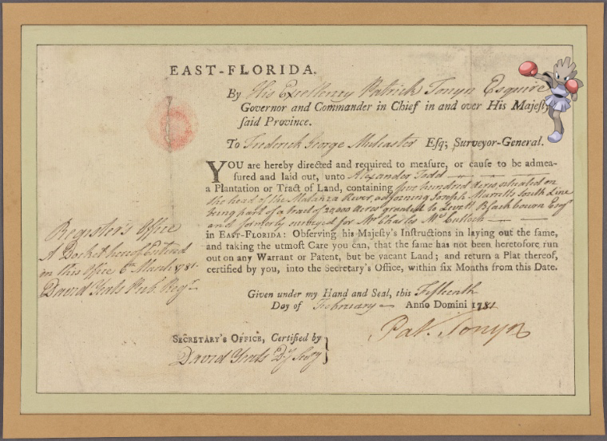

-
Giratina-Altered on Germany, Prussia, 1786!
-
Omanyte @ Paysage. Nº. 426.
-
Hitmonchan on Document
-
![Bellsprout @ Bronx, V. B, Plate No. 9 [Map bounded by Park Ave., 1st Ave., 5th Ave., Briggs Ave.]! http://digitalcollections.nypl.org/items/7716c130-c5fb-012f-8c22-58d385a7bc34](media/finding-QpfwAtpM.png)
-
Espeon @ Text!
-
Exeggutor on Plate 26-XX. Laboratory autoclave..
-
Chandelure | Nassau Heights; Meadowmere Park!
-
 Teddiursa, Parasect + Circus poster. Alabama!
Teddiursa, Parasect + Circus poster. Alabama! -
Zekrom, Lilligant – ANNUAL DINNER [held by] NEW YORK LIBRARY CLUB [at] STURTEVANT HOUSE [NY] (?)!
-
![Bergmite – Letter to Gen. [Nathanael] Greene http://digitalcollections.nypl.org/items/cd4f9500-002d-0130-d456-58d385a7bc34](media/finding-BqDHxeEK.png) Bergmite ; Letter to Gen. [Nathanael] Greene!
Bergmite ; Letter to Gen. [Nathanael] Greene! -
Frogadier @ Letter to Captain -- --.
-
Milotic, Clefairy on Maj. Gen. Artemas Ward.!
-
Tropius ; Undated.
-